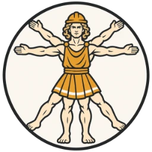
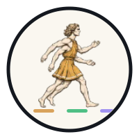

Vitruvius, VM's mascot
Vitruvius stands for VM in its mark, its app icon and the loading picture, and he holds something different for each part of VM. Every picture of him is on this page, with the words that describe it to people who cannot see it.
Vitruvius, VM's mascot, was drawn by an AI image model (ChatGPT) from VM's own description; no person drew or retouched the pictures. He is a new character, not a copy of Leonardo's drawing.
The pictures were made in November 2026. A program in VM's own code then took away their backgrounds, cut them to size and saved them small, without changing what they show. Each one is labelled below as made by AI.
The AI model's own files carried a machine-readable label saying an AI made them (Content Credentials). The smaller files VM shows are new files cut from those, and they do not keep that label; the list of every picture, index.json, is the machine-readable record that each was made by AI.

While a page loads, VM shows Vitruvius running. If your device asks for less movement, he stands still.Loading the pictures…